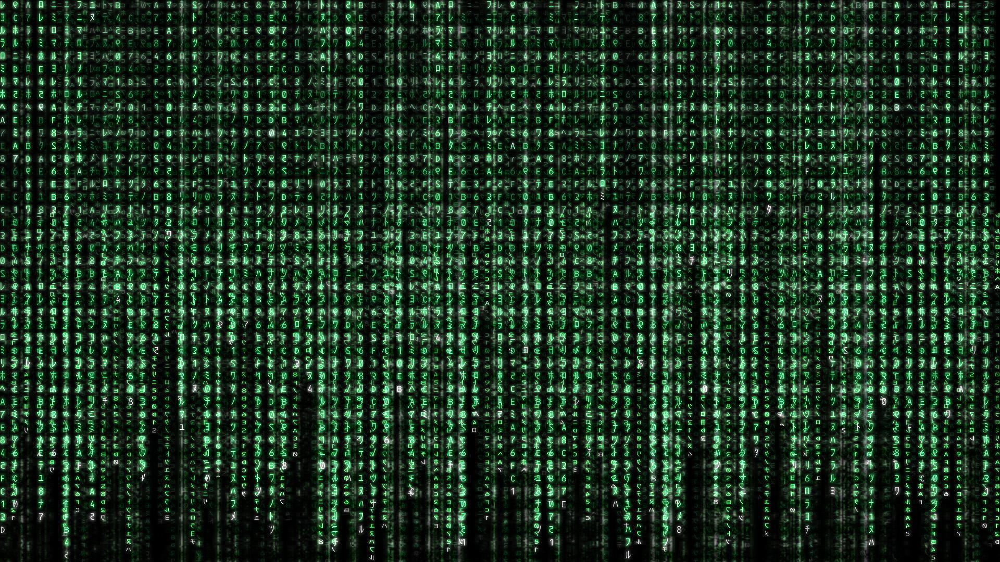
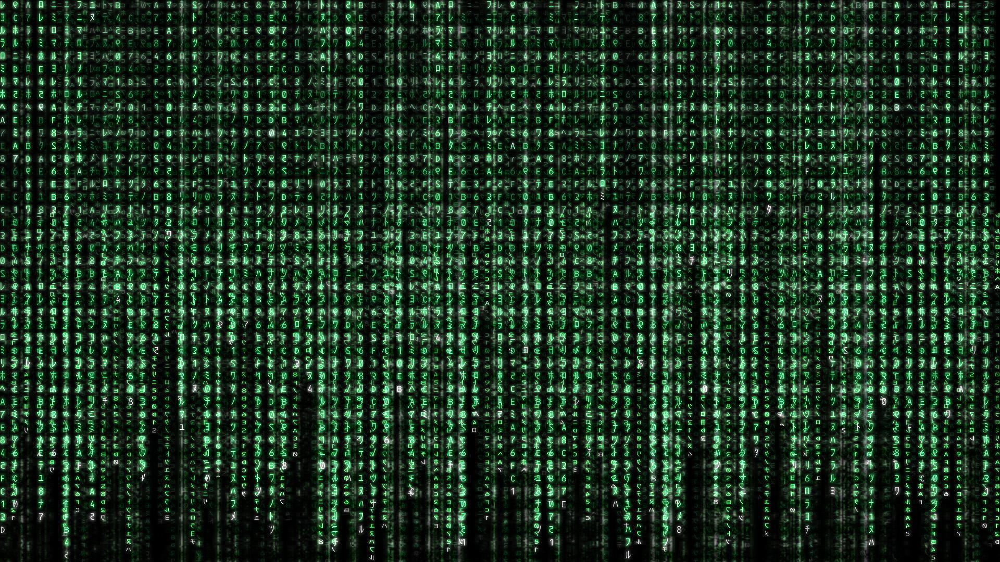
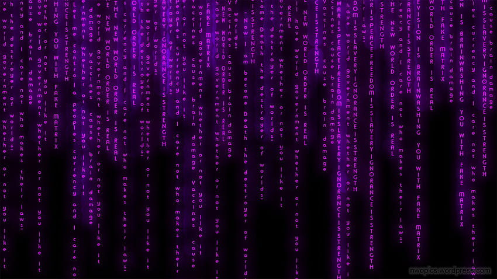
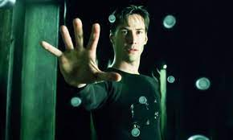
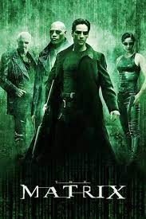
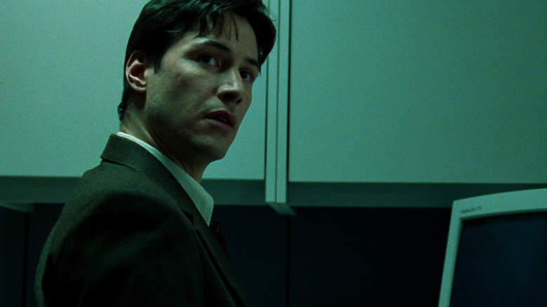
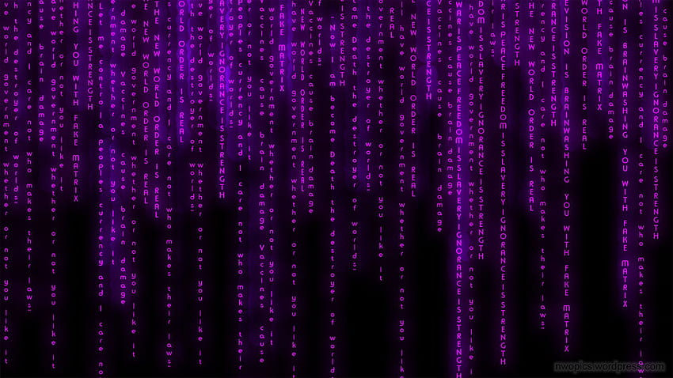
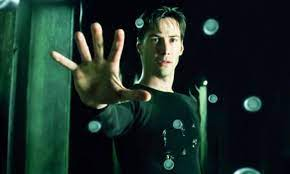
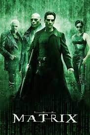
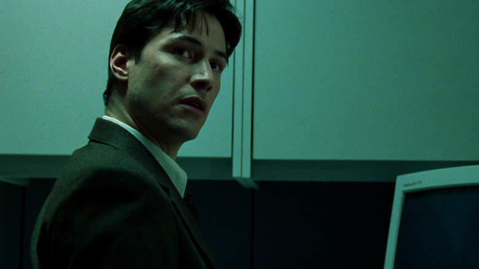

The Wachowski brothers turn their attention to metaphysical SF: Keanu Reeves discovers that the universe (i.e., America and environs) is run by computers that use human beings as batteries for bioelectrical energy, and that he’s living not in 1999 but roughly two centuries later; Laurence Fishburne enlists Reeves to lead a revolt staffed by a small multinational crew (including kick-ass heroine Carrie-Anne Moss). This is simpleminded fun for roughly the first hour, until the movie becomes overwhelmed by its many sourcesBlade Runner (rainy and trash-laden streets), Men in Black (men in dark suits with shades), Star Wars for mythology, Die Hard for skyscrapers, Alien for secondary characters and decor, Superman and True Lies for stunts, and Videodrome for paranoia. There’s not much humor to keep it all life-size, and by the final stretch it’s become bloated, mechanical, and tiresome. 136 min.

 

 






